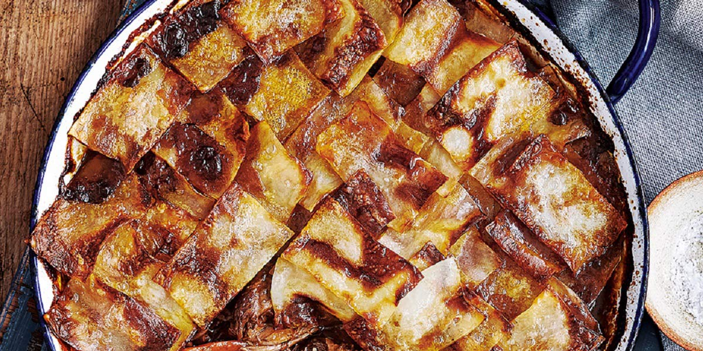

Lancashire Hotpot
Recipe Specification
Ingredients List
| Ingredients | Quantity |
|---|---|
| Stewing Lamb | 1.2kg |
| Unsalted Butter | 100g |
| White Onion | 2x1 |
| Carrots | 4x1 |
| Plain Flour | 25g |
| Worcestershire Sauce | 2 tsp |
| Chicken Stock | 500ml |
| Bay Leaf | 2x1 |
| Maris Piper Potatoes | 2 slices |
| Salt & Pepper | To Season |
Yield: 6-8 portions
Preparation
- Cut stewing lamb into 1 inch cubes.
- Peel and slice white onion.
- Peel and finely dice carrots.
- Peel and thinly slice Maris piper potatoes.
- Wrap foil around each of the bones.
- Pre-heat oven to 160’C.
Cooking Instructions
- Place a frying pan on a medium/high heat and add half the unsalted butter.
- Add the sliced onions and diced carrots and cook for 4-5 minutes.
- Add flour and cook for 2 minutes before adding Worcestershire sauce and chicken stock. Bring to the boil and reduce to the simmer. Season to taste.
- Add lamb and bay leaf before cooking for a further 2 minutes.
- Place lamb mixture in a deep baking dish and arrange slice potato so that its layered in concentric circles from outside to in.
- Place greaseproof paper over the sliced potatoes and cover the dish with 2 layers of foil.
- Place dish in the oven for 1 and ½ hours.
- Melt butter, remove foil and greaseproof paper before brushing butter on to potato, seasoning with salt and pepper and placing back in the oven for 20 minutes.

Serving Suggestions
Lancashire hotpot goes great with panache of vegetables and a homemade gravy.
Storing instructions
Allow Lancashire hotpot to cool to room temperature before putting in an air-tight container and placing in the refrigerator. Consume within 4 days of making it
Reheating Instructions
Place in the microwave for 2-3 minutes until piping hot.